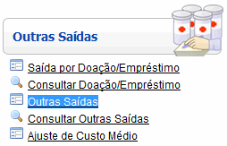
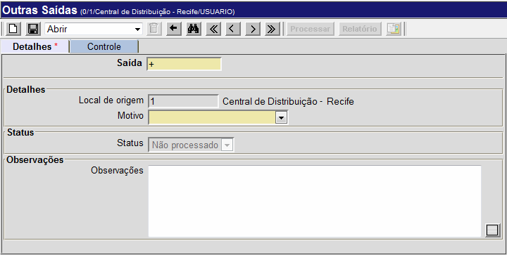
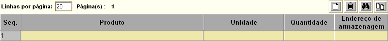
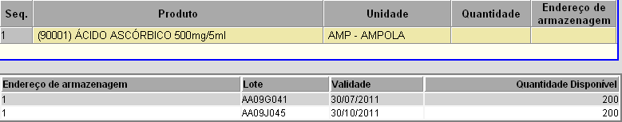
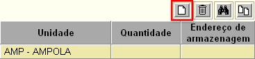
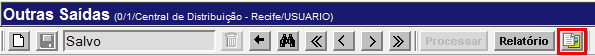
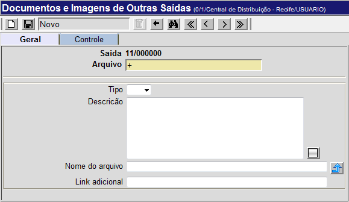
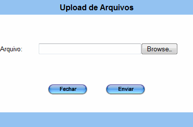

Outras Saídas [ Voltar ]Utilize este formulário para realizar saídas de produtos por motivo de validade vencida ou avaria.O formulário "Outras Saídas" encontra-se dentro do menu de mesmo nome. 
Após clicar no nome do formulário, o sistema abrirá a seguinte tela: 
1º Passo: informe o motivo especial para a saída. Se necessário, deposite informações adicionais no campo "Observações". Observação: o campo "N°. da saída" apresenta um sinal de mais "+" por padrão. Desta forma, assim que a saída é salva, é-lhe atribuída o próximo número disponível. 2° Passo: clique no botão  para salvar os dados inseridos. Assim que o registro é salvo,
será exibida uma grade para inclusão dos produtos do descarte. para salvar os dados inseridos. Assim que o registro é salvo,
será exibida uma grade para inclusão dos produtos do descarte.
3° Passo: insira as informações referentes aos produtos da saída. Informe o código do produto ou clique no botão  [Procurar]
presente no campo "Produto" para selecioná-lo. Em seguida, informe a
quantidade desejada. [Procurar]
presente no campo "Produto" para selecioná-lo. Em seguida, informe a
quantidade desejada.4° Passo: selecione o endereço de armazenagem onde o produto se encontra. Ao informar o código de um produto, abaixo da grade será exibida uma tabela contendo um ou mais endereços de armazenagem que contêm o referido produto (ver imagem abaixo). Clique na tabela abaixo da grade para selecionar o endereço de armazenagem referente ao produto selecionado. Caso o produto selecionado não possua estoque, a tabela não retornará nenhum endereço de armazenagem. 
5° Passo: para inserir mais produtos, clique no botão  da grade (ver imagem
abaixo). Em seguida, repita os passos 3 e 4 até que todos
os produtos tenham sido inseridos. da grade (ver imagem
abaixo). Em seguida, repita os passos 3 e 4 até que todos
os produtos tenham sido inseridos.
Primeiro, clique no botão , no cabeçalho. 
Após clicar no botão, o sistema abrirá a seguinte tela: 
Na parte inferior da tela são exibidos os documentos já anexados ao recebimento.
Clique no botão
 [Upload de arquivos] para visualizar a tela de upload; [Upload de arquivos] para visualizar a tela de upload; 
Para retornar à tela principal do recebimento, clique no botão  . . |
 para
concluir a saída.
para
concluir a saída.  . Uma vez na tela de
visualização do relatório, clique no botão "Imprimir" do navegador para
imprimi-lo.
. Uma vez na tela de
visualização do relatório, clique no botão "Imprimir" do navegador para
imprimi-lo. para
selecionar o arquivo que deseja carregar; e
para
selecionar o arquivo que deseja carregar; e para
realizar o
para
realizar o